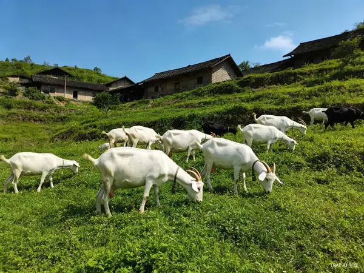
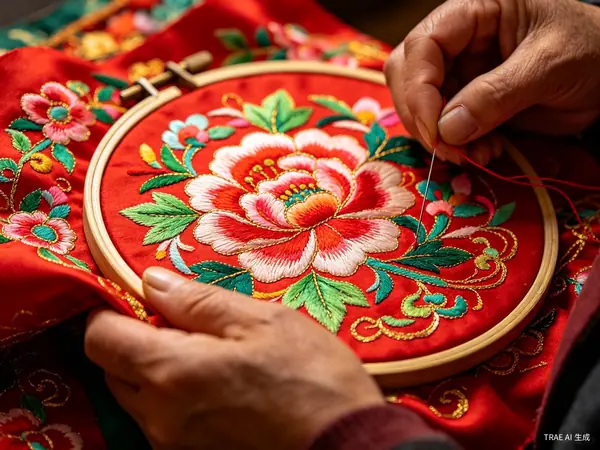

绿水青山就是金山银山
建设美丽宜居新农村，共创幸福美好新生活
了解惠家沟村的历史沿革与发展现状
惠家沟村位于陕西省宝鸡市千阳县城关镇，城乡分类为镇乡结合区，区划代码610328100207。村庄地处渭北高原沟壑区，自然环境优美，民风淳朴，是典型的黄土高原村落。
惠家沟村历史悠久，1961年为惠家河大队，历经多次行政区划调整。2002年刘家沟村并入，2015年庙岭村并入，2018年段家湾村并入，现全村设9个村民小组。村内有千阳刘家沟遗址，为千阳县文物保护单位。
发展特色农业，助力乡村振兴
千阳县是中国矮砧苹果之乡，全县矮砧苹果种植面积达13万亩，2024年苹果全产业链产值突破27亿元。惠家沟村依托产业优势，发展优质苹果种植，果品色泽鲜艳、口感脆甜，远销全国各地。
主导产业
千阳县是全国奶山羊良种名城，全县奶山羊存栏28万只，全产业链年产值达27亿元，带动1.2万名群众人均年增收1万元以上。惠家沟村发展生态奶山羊养殖，带动村民增收致富。
特色产业
千阳县是中国民间艺术刺绣之乡，全县拥有21个刺绣专业合作社，带动1.2万人从事刺绣产业，年产值8600万元。惠家沟村传承西秦刺绣非遗技艺，"千阳绣娘"成为全国驰名劳务品牌。
非遗传承体验田园风光，感受乡村魅力
惠家沟村地处千阳县城关镇，周边旅游资源丰富。村内拥有千湖国家湿地公园（国家4A级景区），邻近燕伋望鲁台（国家3A级景区），是您休闲观光、研学旅游的理想目的地。
千湖国家湿地公园位于惠家沟村辖区内，是陕西省首个国家湿地公园，总面积573.2公顷。公园集河流湿地、库塘湿地、沼泽湿地于一体，是我国西北地区典型的黄土高原湿地，被誉为"湿地典范、人文乐园、养生天堂"。
这里是国宝朱鹮秦岭以北的"第二故乡"，栖息着朱鹮、黑鹳、中华秋沙鸭等5种国家一级保护鸟类，大天鹅、鸳鸯等28种国家二级保护鸟类。漫步4.5公里康养栈道，穿越千亩杨树林，感受天然氧吧的清新空气。
燕伋望鲁台位于千阳县城西关，距惠家沟村约5公里，是陕西省重点文物保护单位、爱国主义教育基地。燕伋是孔子七十二贤弟子之一，三秦大地孔子唯一的贤徒，首开中国西部教育先河。
相传燕伋思念恩师孔子，每日用衣襟撩土垫足遥望鲁国，18年日积月累堆成十余米高的土台，距今已有2400多年历史，被誉为"中华尊师第一台"。景区以"一祠一台一广场"为核心，可体验儒家六艺：拜师礼、弹古琴、射古箭、习书法、学珠算。
观赏朱鹮、天鹅、黑鹳等珍稀鸟类，记录自然之美
苹果、葡萄等时令水果采摘，亲子互动，乐享农趣
朱鹮科普、儒家六艺体验，寓教于乐
千阳大肉泡、荞面饸饹等特色美食，品尝乡村美味
透明公开，服务村民
为改善村庄人居环境，提升村民生活质量，决定在全村范围内开展人居环境整治工作，集中拆除违建牛棚及乱搭乱建...
2026年度农村合作医疗缴费工作现已开始，请各位村民按时缴费...
弘扬尊老敬老爱老的传统美德，全村70岁以上296名老人欢聚一堂，共庆佳节、共话发展...
特邀陕西省人大代表、金达莱刺绣专业合作社创始人王海燕主讲，将西秦刺绣非遗传承与红色理论宣讲相融合...
欢迎来访咨询，共建美好家园
陕西省宝鸡市千阳县城关镇惠家沟村
721000
周一至周五
9:00-12:00 / 14:00-17:30